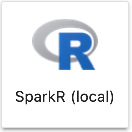

Koding i R og Python har historisk sett foregått på en enkelt maskin og vært begrenset av minnet (RAM) og prosessorkraften på maskinen. For bearbeiding av små og mellomstore datasett er det sjelden et problem på kjøre på en enkelt maskin. Populære pakker som dplyr for R, og pandas for Python, blir ofte brukt i denne typen databehandling. I senere år har det også kommet pakker som er optimalisert for å kjøre kode parallelt på flere kjerner på en enkelt maskin, skrevet i minne-effektive språk som Rust og C++.
Men selv om man kommer langt med å kjøre kode på en enkelt maskin, vil enkelte oppgaver kreve mer minne og prosessorkraft enn dette. For større datasett, eller store beregninger, kan det være nyttig å bruke et rammeverk som kan kjøre kode parallelt på flere maskiner. Et slikt rammeverk er Apache Spark.
Apache Spark er et rammeverk for å kjøre kode parallelt på flere maskiner. Det er bygget for å håndtere store datasett og store beregninger. Det er derfor et nyttig verktøy for å løse problemer som er for store for å kjøre på en enkelt maskin. Men det finnes også andre bruksområder som er nyttige for Apache Spark. Her er noen eksempler:
Store datasett: Hvis du har et datasett som er for stort til å lese inn i minnet på en enkelt maskin, kan du bruke Apache Spark til å lese inn datasettet og kjøre kode på det.
Store beregninger: Hvis du har en beregning som er for stor til å kjøre på en enkelt maskin, kan du bruke Apache Spark til å kjøre beregningen.
Distribuert databehandling: Hvis du har en beregning som kan deles opp i flere deler, kan du bruke Apache Spark til å kjøre beregningen parallelt på flere maskiner på en effektiv måte.
Redusert kjøretid: Hvis du har kjøringer som tar lengre tid en du ønsker, så kan Apache Spark brukes til å redusere kjøretiden ved å kjøre kode parallelt på flere maskiner.
Datavarehus: Hvis du trenger database-funksjonalitet over Parquet-filer, så så kan Apache Spark sammen med for eksempel Delta Lake brukes som et datavarehus.
Strømmende data: Hvis du trenger å prosessere strømmende data, så kan Apache Spark brukes til å prosessere data i sanntid.
Dette er noen av bruksområdene der Spark kan løse problemer som er for store for å kjøre på en enkelt maskin med for eksempel Pandas eller dplyr.
Spark på Dapla
Dapla kjører på et Kubernetes-kluster og er derfor er et svært egnet sted for å kjøre kode parallelt på flere maskiner. Jupyter på Dapla har også en flere klargjorte kernels for å kjøre kode i Apache Spark. Denne koden vil kjøre på et eget kluster av maskiner som er dedikert til Apache Spark, slik som vist i Figur 1.
(a) PySpark på kubernetes
(b) PySpark på 1 maskin
(c) SparkR på kubernetes

(d) SparkR på 1 maskin
Figur 1: Ferdigkonfigurerte kernels for Spark på Dapla.
Figur 1 (a) og Figur 1 (c) kan velges hvis du ønsker å bruke Spark for å kjøre store jobber på flere maskiner, for henholdsvis Python- og R-grensesnittene for Spark.
Figur 1 (b) og Figur 1 (d) bør du velge hvis du ønsker å bruke Spark av andre grunner enn å kjøre store jobber på flere maskiner. For eksempel hvis du ønsker å bruke en av de mange pakker som er bygget på Spark, eller hvis du ønsker å bruke Spark til å lese og skrive data fra Dapla.
Hvis du ønsker å sette opp et eget virtuelt miljø for å kjøre Spark, så kan du bruke ssb-project. Se ssb-project for mer informasjon.
Spark i og Python
Spark er implementert i programmeringsspråket Scala. Men det tilbys også mange grensesnitt for å bruke Spark fra andre språk. De mest populære grensesnittene er PySpark for Python og SparkR for R. Disse grensesnittene er bygget på Spark, og gir tilgang til Spark-funksjonalitet fra Python og R.
PySpark
PySpark er et Python-grensesnitt for Apache Spark. Det er en Python-pakke som gir tilgang til Spark-funksjonalitet fra Python. Det er enkelt å bruke, og har mange av de samme funksjonene som Pandas.
Under ser du datasettet som benyttes for i vedlagt notebook pyspark-intro.ipynb. Den viser hvordan man kan gjøre vanlige databehandling med PySpark. I eksempelet brukes kernel som vist i Figur 1 (b).
Code
# Legger til row index til DataFrame før join med dates_dfdata_df = data_df.withColumn("row_index", expr("monotonically_increasing_id()"))# Joiner de to datasettenedf = ( dates_df.withColumn("row_index", expr("monotonically_increasing_id()")) .join(data_df, "row_index") .drop("row_index"))# Legger til år, kvartal og mnddf = df.withColumn("Year", date_format(df.Date, "yyyy"))df = df.withColumn("Quarter", expr("quarter(Date)"))df = df.withColumn("Month", date_format(df.Date, "MM"))df.select("Date", "Year", "Quarter", "Month", "serie00", "serie01").show(5)
Det finnes også et Pandas API/grensesnitt mot Spark. Målet med en er å gjøre overgangen fra Pandas til Spark lettere for nybegynneren. Men hvis man skal gjøre litt mer avansert databehandling anbefales det at man bruker PySpark direkte og ikke Pandas API-et.
SparkR
SparkR er et R-grensesnitt for Apache Spark. Det er en R-pakke som gir tilgang til Spark-funksjonalitet fra R. Det er enkelt å bruke, og har mange av de samme funksjonene som dplyr. Se eksempel i notebook under:
I denne delen viser vi hvordan funksjonalitet som kan bli relevant for SSB å benytte seg av i fremtiden. Men det er fortsatt under testing og ta det i betraktning før man eventuelt implementerer dette i produksjon.
En av utvidelsene som er laget rundt Apache Spark er den såkalte Lakehouse-arkitekturen. Kort fortalt kan den dekke behovene som et klassisk datavarehus har tatt seg av tidligere. I kontekst av SSB sine teknologier kan det også benyttes som et databaselag over Parquet-filer i bøtter. Det finnes flere open source løsninger for dette, men mest aktuelle er:
I det følgende omtaler vi hovedsakelig egenskapene til Delta Lake, men alle rammeverkene har mange av de samme egenskapene. Delta Lake kan også benyttes på Dapla nå.
Sentrale egenskaper ved Delta Lake er:
ACID-transactions som sikrer data-integritet og stabilitet, også når det skjer feil.
Metadata som bli håndtert akkurat som all annen data og er veldig skalebar. Den støtter også egendefinert metadata.
Schema Enforcement and Evolution sikrer at skjemaet til dataene blir håndhevet, og den tillater også den kan endres over tid.
Time travel sikrer at alle versjoner av dataene er blitt lagret, og at du kan gå tilbake til tidligere versjoner av en fil.
Audit history sikrer at du kan få full oversikt over hvilke operasjoner som utført på dataene.
Inserts, updates and deletes betyr at du lettere kan manipulere data enn hva som er tilfellet med vanlige Parquet-filer.
Indexing er støttes for forbedre spørringer mot store datamengder.
I vedlagt notebook deltalake-intro.ipynb finner du blant annet eksempler på hvordan du legger til følgende metadata i spesifikk versjon av en fil:
Code
# Lagrer egendefinert metadata i en json-filimport jsonmetadata = {"comment": "Kontaktet oppgavegiver og kranglet!","manueltEditert": "True","maskineltEditert": "False",}metadata
{'comment': 'Kontaktet oppgavegiver og kranglet!',
'manueltEditert': 'True',
'maskineltEditert': 'False'}